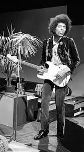
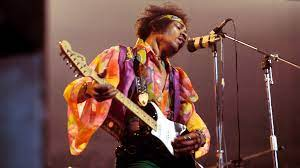
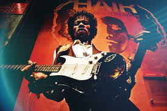
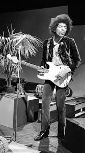
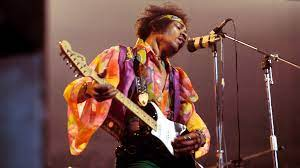
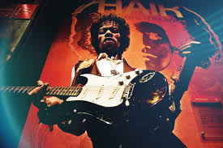
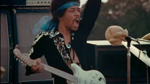
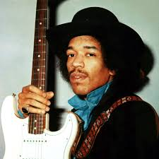
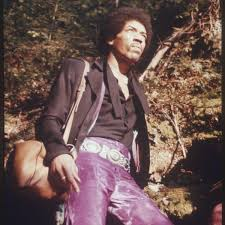
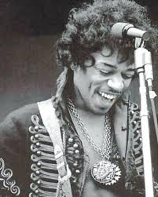
One of the Greatest Guitar Players Ever.
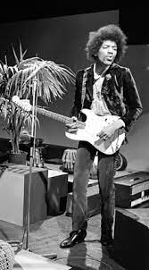
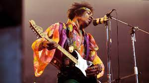
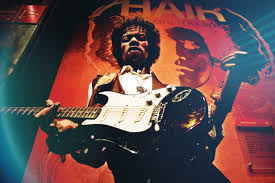
One of the Greatest Guitar Players Ever.
Down the street you can hear her scream "you're a disgrace" As she
slams the door in his drunken face, And now he stands outside And all
the neighbors start to gossip and drool He cries "Oh girl, you must be
mad, What happened to the sweet love you and me had?" Against the door
he leans and starts a scene, And his tears fall and burn the garden
green And so castles made of sand, Fall in the sea, eventually A
little Indian brave who before he was ten, Played war games in the
woods with his Indian friends, And he built a dream that when he grew
up, He would be a fearless warrior Indian Chief Many moons passed and
more the dream grew stronger, Until tomorrow, he would sing his first
war song, And fight his first battle, but something went wrong,
Surprise attack killed him in his sleep that night And so castles made
of sand, Melts into the sea, eventually There was a young girl, whose
heart was a frown, 'Cause she was crippled for life, and she couldn't
speak a sound And she wished and prayed she could stop living, So she
decided to die She drew her wheel chair to the edge of the shore, and
to her legs she smiled "You won't hurt me no more" But then a sight
she'd never seen made her jump and say "Look, a golden winged ship is
passing my way" And it really didn't have to stop, it just kept on
going And so castles made of sand Slips into the sea, eventually